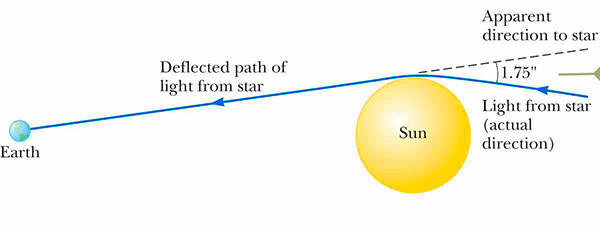
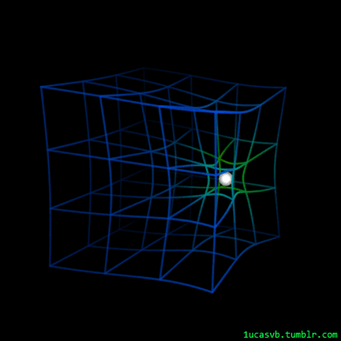
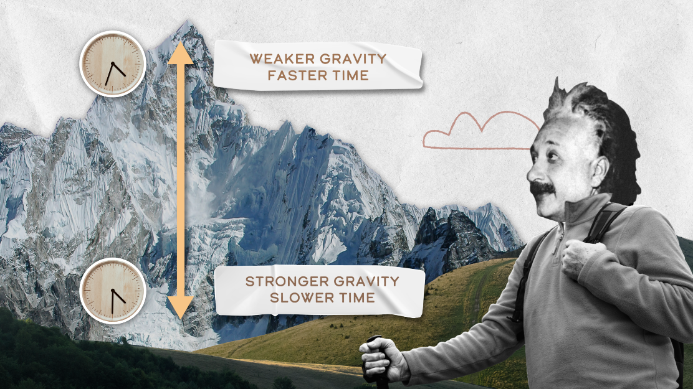
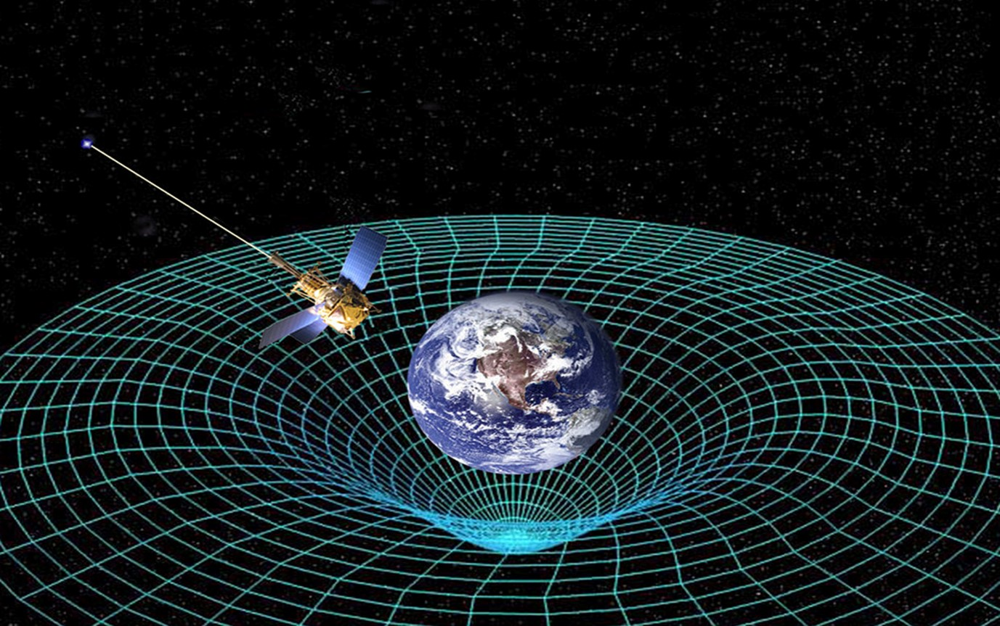
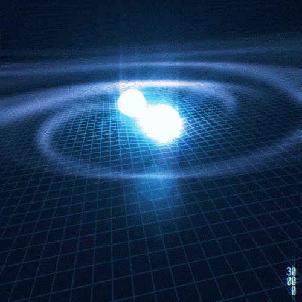
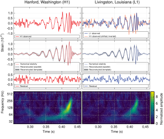
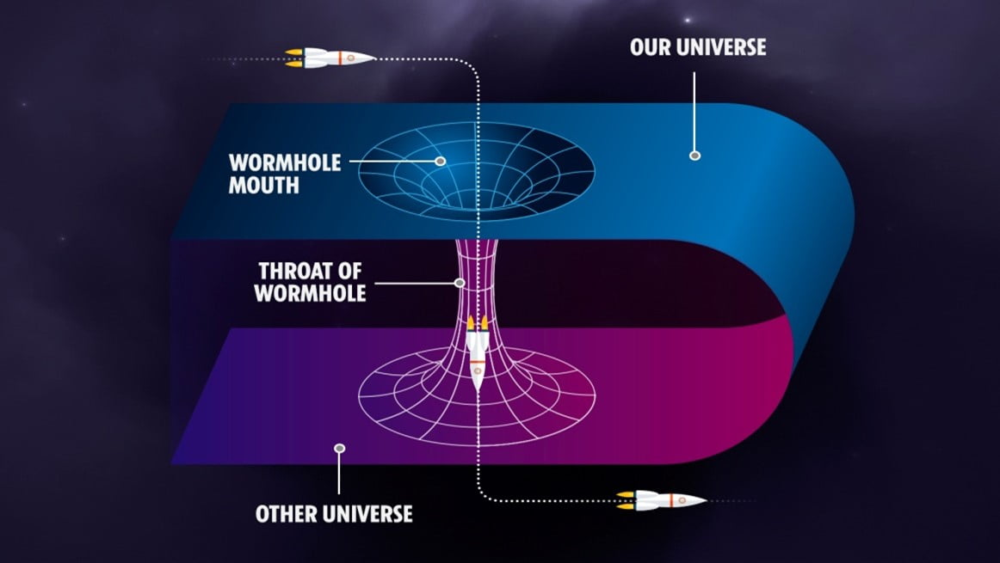

It’s midnight. You’re standing in a quiet valley. The mountains around you fade into dark silhouettes, and the starlight above fills you with excitement for a night of stargazing through your telescope. You focus on what looks like a bright star with a tiny blemish. You adjust the focus, and in a breath of realization, you find that it’s not a star at all, but Jupiter, distant yet luminous. You wonder about the long journey of each photon, reflected from Jupiter’s cloud tops, crossing the cosmic sea to meet your gaze.
The answer is something we have never known in classical Newton’s equations. It lies in Einstein’s general relativity. Jupiter's large mass causes a curvature in a geometrical manifold known as the Curvature of Spacetime, bending the geodesic path those photons follow, so that without you even noticing, Jupiter is subtly changing not just your view of the universe, but also the moment in time you’re experiencing.
Bending of Light – From the Sun to Black Holes
The idea of light deflecting near massive objects like Jupiter, the Sun, and black holes was a bold prediction in Einstein’s general relativity that met widespread initial skepticism. However, in May 1919, when Sir Arthur Eddington led an astronomical expedition to the island of Príncipe to photograph a total solar eclipse, scientists captured stars located visually behind the Sun. To their astonishment, the stars’ apparent positions had shifted outward away from the solar limb.
The cause? Light originating from those distant stars had bent as it traversed the gravitational curvature produced by the Sun's mass. This historic measurement provided the world's first experimental validation that gravity deflects electromagnetic radiation—a phenomenon now termed gravitational lensing.

The observed angle of deflection can be derived directly from the Schwarzschild metric of general relativity. For a photon grazing a spherically symmetric mass $M$ at an impact parameter $b$, the total angular deflection $\theta$ is given by:
$$\theta \approx \frac{4GM}{c^2 b}$$For light just grazing the Sun’s surface (where the impact parameter equals the solar radius $b \approx R_\odot$ and the mass is $M_\odot$), we write:
$$\theta_\odot \approx \frac{4GM_\odot}{c^2 R_\odot}$$
Substituting the known physical constants:
• Universal gravitational constant $G = 6.674 \times 10^{-11}\text{ N}\cdot\text{m}^2/\text{kg}^2$
• Solar mass $M_\odot = 1.989 \times 10^{30}\text{ kg}$
• Speed of light $c = 2.998 \times 10^8\text{ m/s}$
• Solar radius $R_\odot = 6.963 \times 10^8\text{ m}$
This exact value of $1.75^{\prime\prime}$ was confirmed by Eddington’s expedition plates, permanently cementing Einstein’s theory over the Newtonian corpuscular value ($0.875^{\prime\prime}$, which predicted only half the actual bending).
The Spacetime Fabric and Time Dilation

Spacetime is the four-dimensional manifold in which all particles, photons, and fields propagate. Its deformation does not solely redirect trajectories of light; it alters the fundamental flow of proper time $\tau$—the fourth dimension in relativity.
Consider a classic thought experiment: envision two ultra-precise atomic clocks. Clock 1 sits on the summit of Mount Everest (altitude $\approx 8,848\text{ m}$), while Clock 2 rests at sea level. Because Clock 2 is immersed deeper within Earth's gravitational potential well, it experiences gravitational time dilation. Relative to an observer on the mountain, the sea-level clock ticks measurably slower.
Accounting for both gravitational red-shift and kinematic time dilation from Earth's rotation, the fractional proper time difference is expressed as:
$$\frac{\Delta\tau}{\tau} = \frac{GM}{c^2}\left(\frac{1}{r_{\text{sea}}} - \frac{1}{r_{\text{everest}}}\right) - \frac{v_{\text{sea}}^2 - v_{\text{everest}}^2}{2c^2}$$ $$\frac{\Delta\tau}{\tau} \approx 9.6577 \times 10^{-13} \implies \Delta\tau_{\text{per day}} \approx 83.44\text{ ns/day}$$
While nanoseconds seem imperceptible in everyday life, this relativistic difference becomes vital in aerospace and satellite telecommunications. The Global Positioning System (GPS) constellation operates 31 satellites orbiting at an altitude of approximately $20,200\text{ km}$ ($r_{\text{S}} \approx 26,578\text{ km}$).
At this high altitude:
• Gravitational time dilation: The weaker gravity causes satellite clocks to tick faster by $+45.9\ \mu\text{s/day}$.
• Special relativistic kinematic dilation: The satellite's orbital speed ($v_{\text{S}} \approx 3.87\text{ km/s}$) causes clocks to tick slower by $-7.2\ \mu\text{s/day}$.

Gravitational Waves: Ripples in Spacetime
Can spacetime itself vibrate? Yes. In general relativity, accelerating quadrupolar masses generate propagating metric perturbations—ripples in spacetime that travel across the cosmos at the exact speed of light.
When two coalescing black holes or neutron stars inspiral and merge, the event terminates in a phase called ringdown. During ringdown, the newly formed single horizon settles into a stationary Kerr black hole, radiating colossal quantities of energy as gravitational waves.

In September 2015, the Laser Interferometer Gravitational-Wave Observatory (LIGO) achieved humankind’s first direct observation of gravitational waves (event GW150914). Emitted by two stellar-mass black holes ($36M_\odot$ and $29M_\odot$) merging $1.3\text{ billion}$ light-years away, the waves stretched and squeezed LIGO’s $4\text{-kilometer}$ laser arms by less than one-ten-thousandth the diameter of a proton ($h \sim 10^{-21}$).

Wormholes (Einstein–Rosen Bridges)
Just as Einstein’s field equations admit gravitational lenses and gravitational wave solutions, they also yield speculative topological structures known as Einstein–Rosen bridges or wormholes.

Mathematically, a wormhole consists of two distinct asymptotic "mouths" connected by a spatial "throat". Passing through one mouth could theoretically allow instant traversal across cosmological distances. However, standard general relativity proves that without exotic matter possessing negative energy density (violating the Null Energy Condition), any classical wormhole throat pinches shut faster than light can traverse it, forming singularities.
While macroscopic traversable wormholes remain theoretical conjectures, their mathematical study continues to stimulate research at the intersection of general relativity, quantum entanglement (the $ER = EPR$ conjecture), and quantum gravity.
Conclusions
For over a century, Albert Einstein’s general theory of relativity has guided our understanding of the universe’s most profound mechanisms. From the deflection of starlight near the Sun and time dilation enabling global satellite navigation, to the cosmic symphonies of gravitational waves detected on Earth, geometry and physical reality remain inextricably linked.
In Einstein’s universe, space is not an empty stage, and time is not an immutable clock; together, they form a dynamic, vibrating fabric. Every discovery is not the end of the inquiry, but an invitation to look deeper into the cosmos.